информатика · история вычислительной техники
От абака до микросхемы
Сорок коротких видео и разбор к каждому: как люди считали до электричества, почему механические машины уступили лампам, а лампы — транзистору, и откуда у современного компьютера его главные идеи.
Описание курса
- ≈3000 до н. э. абак
- 1620 счётная линейка
- 1801 станок Жаккара
- 1837 машина Бэббиджа
- 1890 табулятор Холлерита
- 1941 реле
- 1945 лампы · ENIAC
- 1947 транзистор
- 1958 интегральная схема
Занятия
40 из 40-
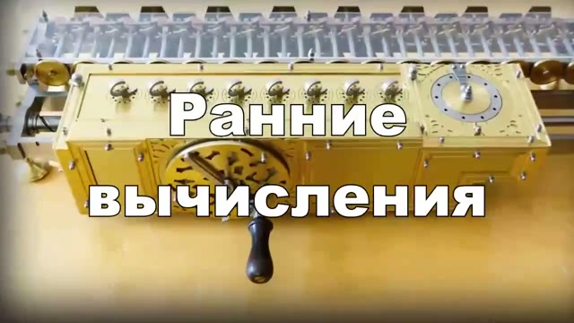
Ранние вычисления: счёт, механизмы, перфокарты Абак и счётная линейка, механические калькуляторы, станок Жаккара, проект Бэббиджа и первая программа Ады Лавлейс. Смотреть и разбирать → -
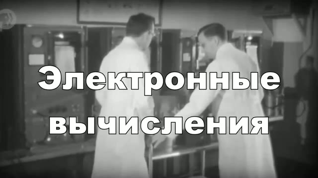
Электронные вычисления: лампы, ENIAC, транзистор Почему реле перестали справляться, как устроена электронная лампа, что придумали в ENIAC и зачем программа переехала в память. Смотреть и разбирать → -
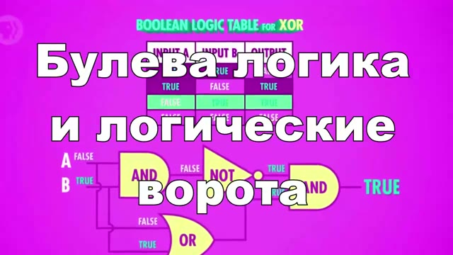
Булева логика и логические элементы Высказывания и таблицы истинности, операции AND, OR, NOT, XOR, логические элементы на транзисторах и сборка схем из простых блоков. Смотреть и разбирать → -
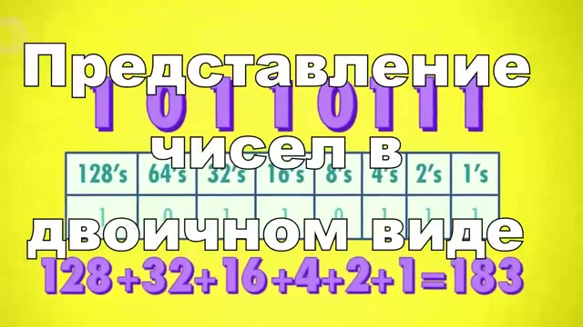
Двоичное представление: числа и буквы Биты и байты, позиционная запись, отрицательные числа, ASCII и Unicode, как в числа превращаются буквы, звук и изображения. Смотреть и разбирать → -
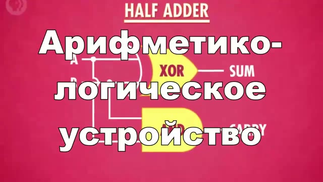
АЛУ: как компьютер считает Полусумматор и полный сумматор, сложение многоразрядных чисел, вычитание через дополнительный код, флаги результата и управляющий код операции. Смотреть и разбирать → -
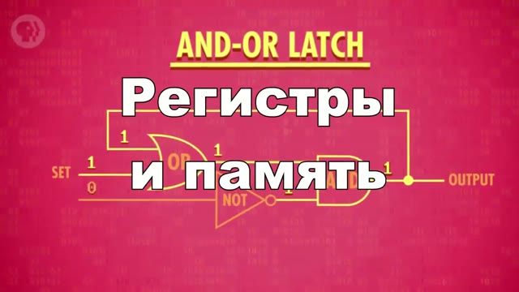
Регистры и память Регистры внутри процессора, адресация, дешифратор адреса, двумерная матрица памяти и разница между SRAM и DRAM. Смотреть и разбирать → -
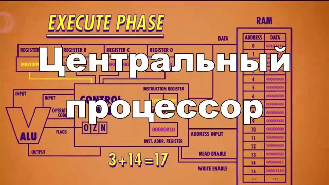
Центральный процессор АЛУ, регистры и устройство управления, цикл загрузки-декодирования-исполнения, счётчик команд и переходы. Проект — симулятор Simpletron на Python. Смотреть и разбирать → -
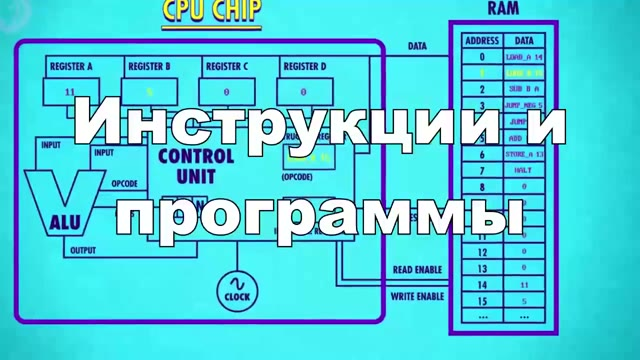
Команды и программы Формат команды, код операции и операнды, работа с регистрами и памятью, условные переходы и пример простой программы. Проект — компилятор Simple в SML на Python. Смотреть и разбирать → -
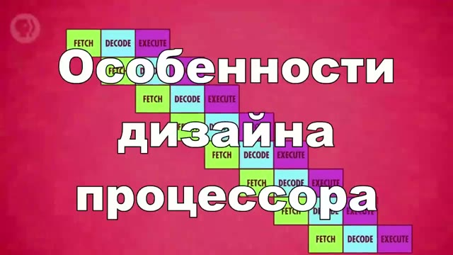
Продвинутые схемы процессоров Конвейер команд, кэш, предсказание переходов, суперскалярность и многоядерность. Смотреть и разбирать → -
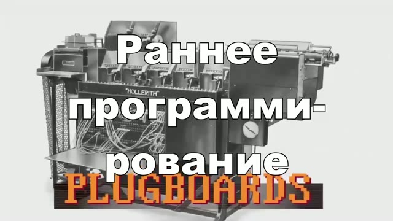
Раннее программирование Коммутационные панели, перфокарты, машинный код, ассемблер, компилятор Грейс Хоппер и первые языки высокого уровня. Смотреть и разбирать → -
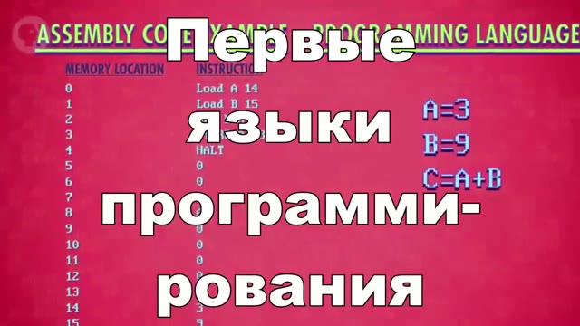
Первые языки программирования Ассемблер и ассемблерные команды, FORTRAN, LISP, COBOL, ALGOL, компилятор и интерпретатор, переносимость программ. Смотреть и разбирать → -
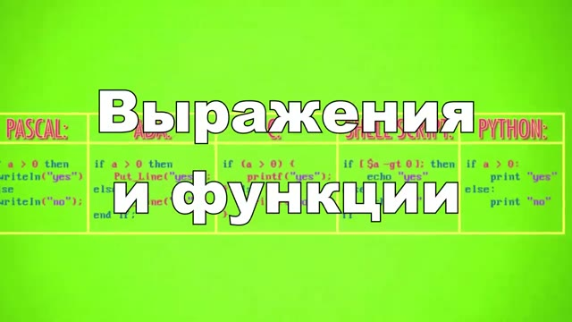
Основы программирования Переменные и присваивание, условия и циклы, функции и параметры, область видимости и побочные эффекты. Смотреть и разбирать → -
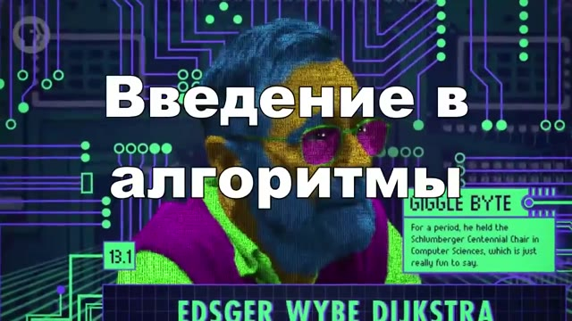
Введение в алгоритмы Свойства алгоритма, линейный и бинарный поиск, сортировка, оценка сложности и разница между алгоритмом и программой. Смотреть и разбирать → -
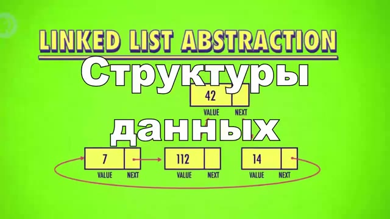
Структуры данных Массив, связный список, стек и очередь, деревья и хеш-таблицы, компромиссы между скоростью и памятью. Смотреть и разбирать → -
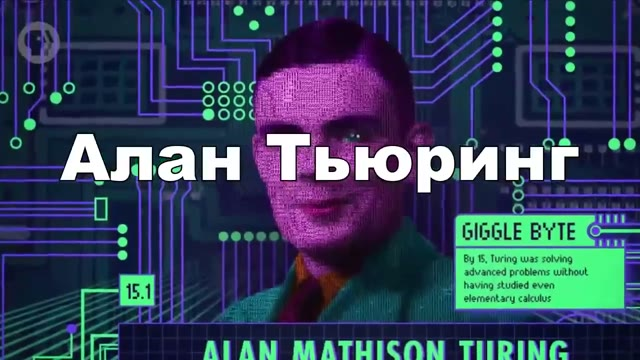
Алан Тьюринг Машина Тьюринга, универсальная машина, проблема остановки и тест Тьюринга. Смотреть и разбирать → -
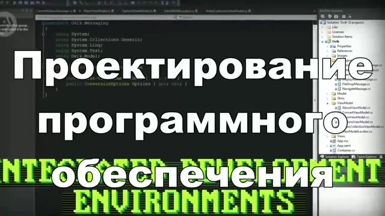
Инженерия программного обеспечения Программные интерфейсы, контроль версий, тестирование и отладка, код-ревью, документация и процессы разработки. Смотреть и разбирать → -
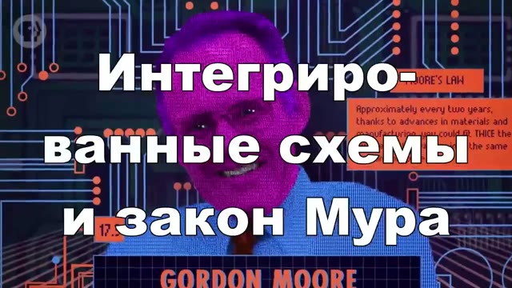
Интегральные схемы и закон Мура Переход от отдельных деталей к микросхемам, фотолитография, плотность элементов и пределы роста. Смотреть и разбирать → -
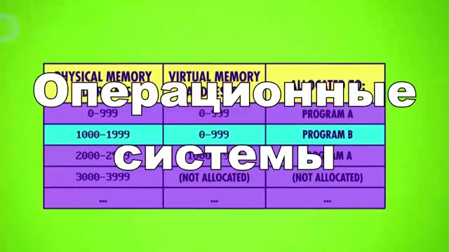
Операционные системы Планировщик, виртуальная память, драйверы, файловые системы и права доступа. Смотреть и разбирать → -
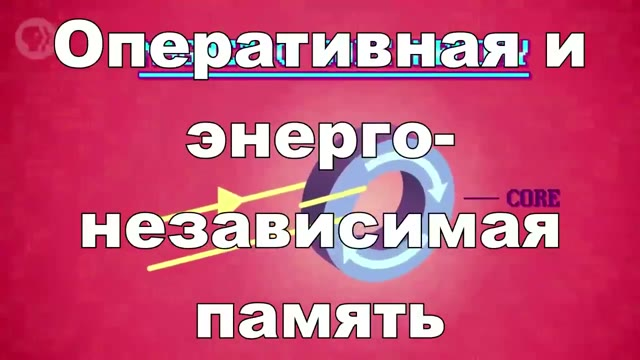
Память и хранение Оперативная память и диски, магнитные и твердотельные носители, иерархия, надёжность и резервное копирование. Смотреть и разбирать → -
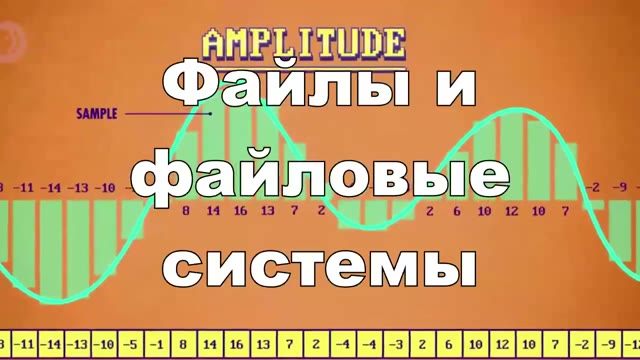
Файлы и файловые системы Имена и пути, каталоги, таблица размещения, метаданные, фрагментация и права. Смотреть и разбирать → -
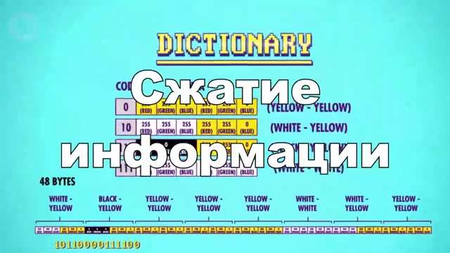
Сжатие информации Сжатие без потерь и с потерями, коды переменной длины, словарные методы, JPEG и MP3, артефакты и выбор формата. Смотреть и разбирать → -
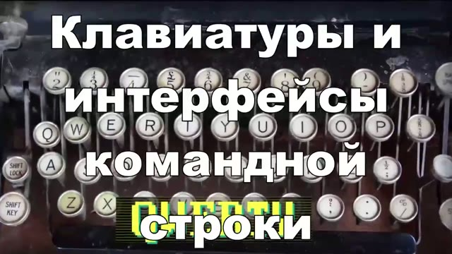
Клавиатуры и командная строка Раскладки, терминал, команды и аргументы, конвейеры и автоматизация рутины. Смотреть и разбирать → -
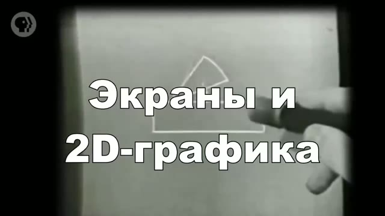
Экраны и двухмерная графика Электронно-лучевая трубка, пиксели и растр, векторная графика, видеопамять, цвет и прозрачность, шрифты и спрайты. Смотреть и разбирать → -
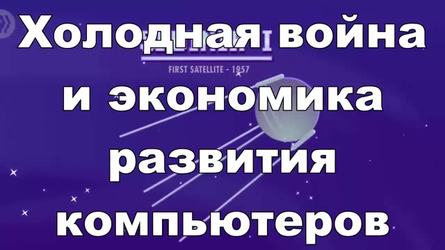
Холодная война и потребительская электроника Военные заказы, системы ПВО, космос, бытовая техника и путь компьютера к массовому рынку. Смотреть и разбирать → -
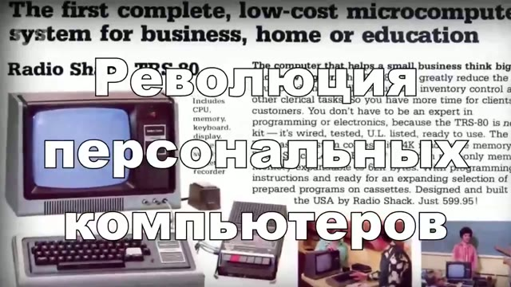
Революция персональных компьютеров Микропроцессор, Altair 8800, Apple II, IBM PC и Macintosh: как компьютер переехал из машинного зала на стол. Смотреть и разбирать → -
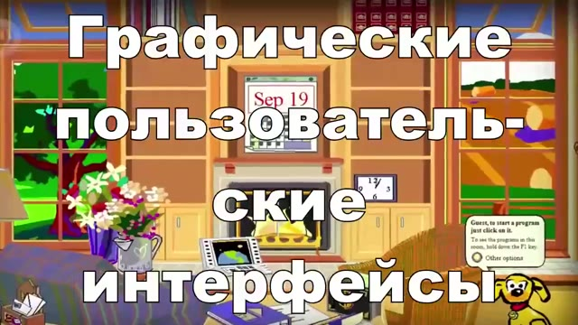
Графические интерфейсы Окна и значки, мышь и указатель, событийная модель, стандартные элементы и доступность. Смотреть и разбирать → -
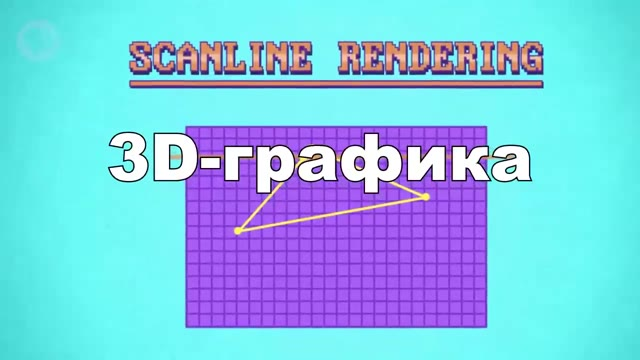
Трёхмерная графика Полигоны и сетки, координатные преобразования, проекция, z-буфер, освещение и текстуры. Смотреть и разбирать → -
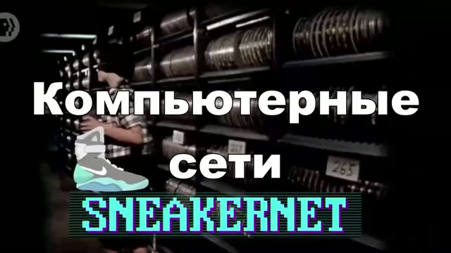
Компьютерные сети Топологии, пакеты и адреса, коммутаторы и маршрутизаторы, протоколы и уровни. Смотреть и разбирать → -
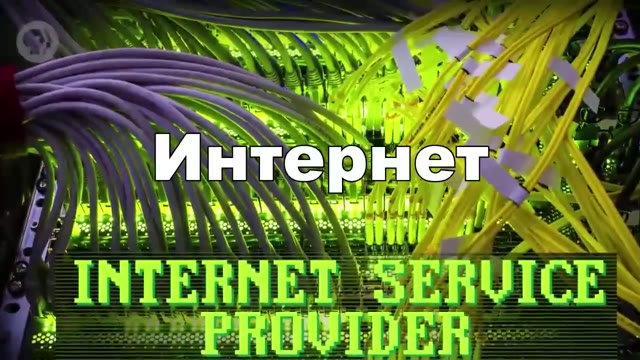
Интернет IP и маршрутизация, DNS, провайдеры и обмен трафиком, как работает доставка пакета через полмира. Смотреть и разбирать → -
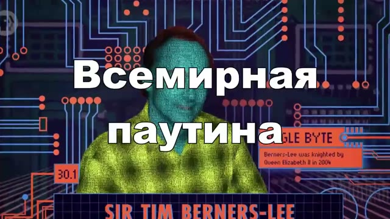
Всемирная паутина URL и HTTP, HTML и гиперссылки, браузер и сервер, поисковые системы и индексация. Смотреть и разбирать → -
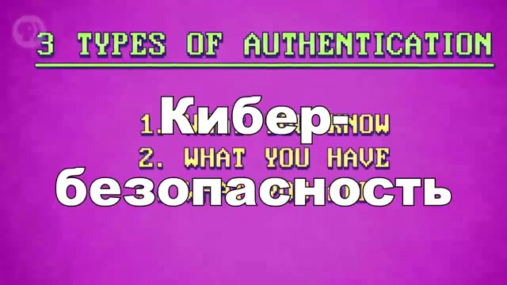
Кибербезопасность Аутентификация и пароли, шифрование канала, фишинг и социальная инженерия, обновления и резервные копии. Смотреть и разбирать → -
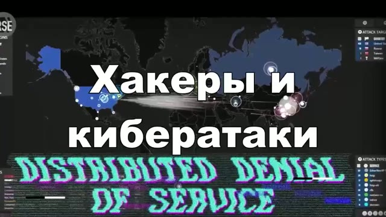
Хакеры Телефонное фрикинг, первые компьютерные взломы, червь Морриса, закон о компьютерном мошенничестве, уязвимости нулевого дня и этика раскрытия. Смотреть и разбирать → -
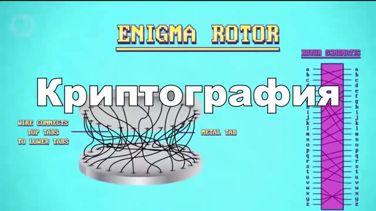
Криптография Симметричное и асимметричное шифрование, обмен ключами, цифровая подпись и хеширование. Смотреть и разбирать → -
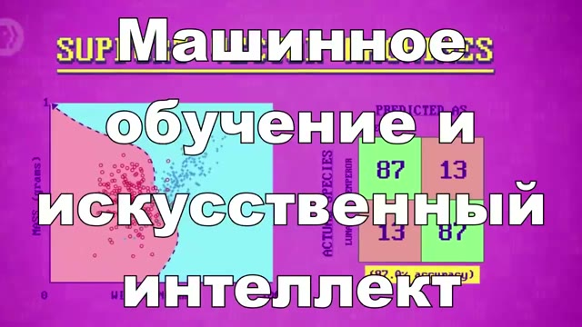
Машинное обучение и искусственный интеллект Признаки и классификация, деревья решений, граница разделения, метод опорных векторов, нейросети и глубокое обучение, переобучение. Смотреть и разбирать → -
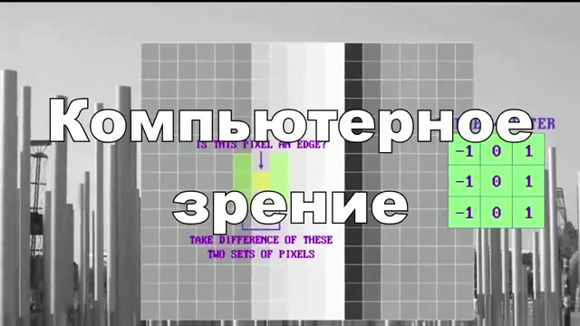
Компьютерное зрение Изображение как числа, свёртки и признаки, распознавание объектов, обучение на примерах и ограничения. Смотреть и разбирать → -
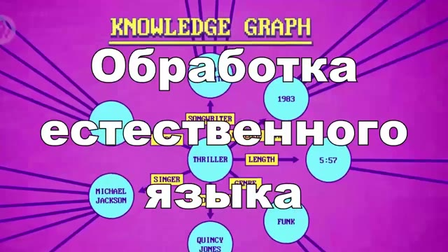
Обработка естественного языка Токенизация, эмбеддинги, синтаксис и смысл, перевод и большие языковые модели. Смотреть и разбирать → - Роботы Сенсоры и actuators, контур управления, автономность, программирование поведения и безопасность. Смотреть и разбирать →
- Психология вычислений Восприятие интерфейсов, когнитивная нагрузка, привычки и уведомления, влияние на внимание и сон. Смотреть и разбирать →
-
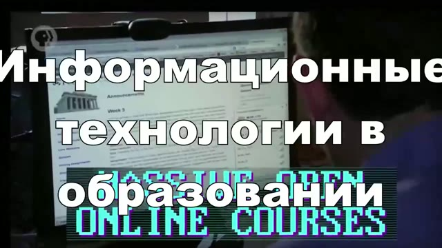
Технологии в образовании Обучающие машины, PLATO, LOGO и программирование для детей, интеллектуальные тьюторы, массовые онлайн-курсы и пределы автоматизации обучения. Смотреть и разбирать → -
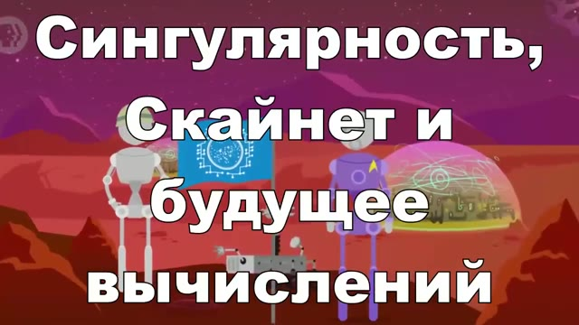
Сингулярность, Скайнет и будущее вычислений Пределы закона Мура, квантовые вычисления, автоматизация, сценарии сильного ИИ и разница между научной фантастикой и инженерией. Смотреть и разбирать →
Все 40 занятий готовы: конспект, схема, термины, карточки, квиз и практика. Видео играется из плейлиста ВК.
Как заниматься
три шага-
Посмотрите видео
10—12 минут. Не конспектируйте на ходу — просто отметьте, что показалось непонятным.
-
Прочитайте разбор
То же содержание, но текстом и по разделам: даты, устройство машин, причины и следствия.
-
Проверьте себя
Ответьте на вопросы в конце страницы, не подглядывая. Не сошлось — вернитесь к нужному разделу.
Основа курса
Crash Course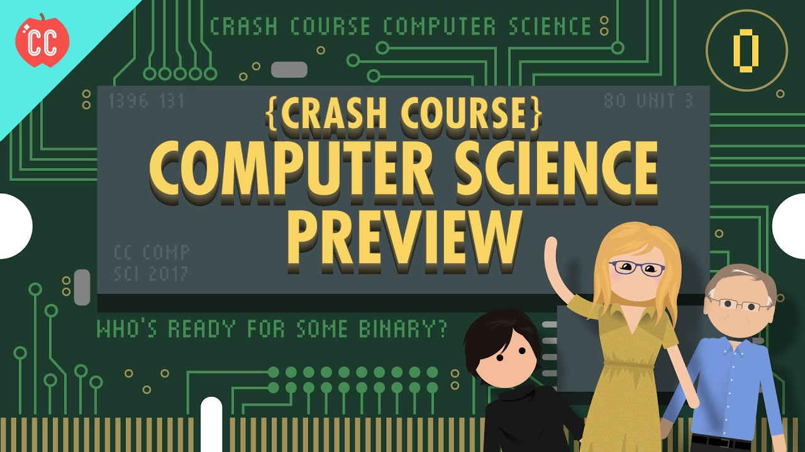
Курс «Основы информационных технологий» основан на Crash Course Computer Science — серии из 40 эпизодов, которую ведёт Кэрри Энн Филбин.
Темы оригинальных выпусков переработаны в русскоязычные занятия с конспектами, схемами, терминами, вопросами для самопроверки и практикой.
Смотреть Crash Course Computer Science на YouTube →